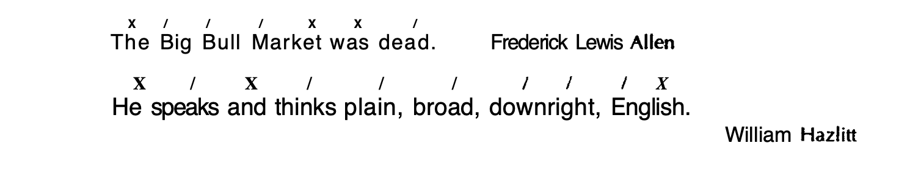
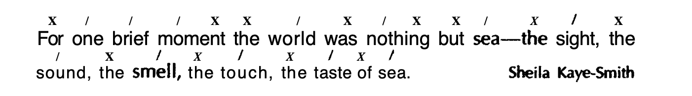

An old man sat in the corner. (matter of fact)
In the corner sat an old man. (like a close-up in a film, suggests that the fact is important.)
It suddenly began to rain.
Suddenly, it began to rain. (opening position and isolating it with a comma)
something important”
Finally, last point about the man: he is in trouble.
-Benjamin DeMott
This was the consequence we feared.
-Evelyn Jones
It’s tragic—this inability of human beings to understand each Other.
-Joy Packer
And that’s why there’s really a very simple answer to our original question.
What do baseball managers really do?
Worry.
Constantly.
For a living.
-Leonard Koppett
Going off her diet, she gained back all the weight she had lost. Also the friends.
-student
As Thompson and the Transcript man had said, Vanzetti was naturally and quietly eloquent. So he was electrocuted.
-Phil strong
Come here!
You listen to me!
Insist on yourself; never imitate.
-Ralph Waldo Emerson
Consider, for example, those skulls on the monuments.
-Aldous Huxley
Are you going into town today?”
Had I only been there
And in one corner, book-piled like the rest of the furniture, stood a piano.
-Kenneth Grahame
Wrangles he avoided, and disagreeable persons he usually treated with a cold and freezing contempt.
-Douglas Southall Freeman
And finally, stammering a crude farewell, he departed.
-Thomas Wolfe
If you really want to be original, to develop your own ideas in your own way, then maybe you shouldn’t go to college.
-student
That John Chaucer was only an assistant seems certain.
-John Gardner
A desirable young man? Dust and ashes! What was there desirable in such a thing as that?
-Lytton Strachey
Yet this need not be. The means are at hand to fulfill the age-old dream: poverty can be abolished. How long shall we ignore this under-developed nation in our midst? How long shall we look the other way while our fellow human beings suffer? How long?
-Michael Harrington
Color is not a human or personal reality; it is a political reality.
-James Baldwin
This is more than poetic insight; it is hallucination.
-J.C. Fumas
Conventions may be cruel, they may be unsuitable, they may even be grossly superstitious or obscene, but there is one thing they never are. Conventions are never dead.
-G. K. Chesterton
Although conventions may be cruel, unsuitable, or even grossly superstitious or obscene, they are never dead.


They [a man’s children] are his for a brief and passing season.
-Margaret Mead
This antiquated and indefensible notion that young people have no rights until they are twenty-one
-Evelyn Jones
[lady mary wortley montague was like] a dilapidated macaw with a hard, piercing laugh, mirthless and joyless, with a few unimaginative phrases, with a parrot’s powers of observation and a parrot’s hard and poisonous bite.
-Edith Sitwell
A vile beastly rotten-headed fool-begotten brazen-throated pernicious piggish screaming, tearing, roaring, perplexing, split-me-crackle crash-me-giggle insane ass…. is practicing howling below-stairs with a brute of a singing-master so horribly, that my head is nearly off.
-Edmund Lear
Curiosity is one of the lowest human faculties.
-E. M. Forster
Great blobs of rain fall. Rumble of thunder. Lightning streaking blue on the building.
-J.P. Donleavy
Science was traditionally aristocratic, speculative, intellectual in intent; technology was lower-class, empirical, action-oriented.
-Lynn White, Jr.
So the great gift of symbolism, which is the gift of reason, is at the same time the seat of man’s peculiar weakness—the danger of lunacy.
-Susanne K. Langer
We can never forget that everything Hitler did in Germany was “legal” and everything the Hungarian freedom fighters did was “illegal.”
-Martin Luther King, Jr.
As the military power of Kafiristan increases, so too does the pride that Dravot has.
REVISION: AS the military power of Kafiristan increases, so too does Dravot’s pride.
Leibnitz, it has sometimes been said, was the last man to know everything.
-Colin Cherry
Children, curled in little balls, slept on straw scattered on wagon beds.
-Sherwood Anderson
If the King notified his pleasure that a brief-less lawyer should be made a judge or that a libertine baronet should be made a peer, the gravest counsellors, after a little murmuring, submitted.
-Thomas Babington Macaulay
And then, you will recall, he [henry thoreau] told of being present at the auction of a deacon’s effects and of noticing, among the innumerable odds and ends representing the accumulation of a life- time, a dried tapeworm.
-E. B. white
The position—if poets must have positions, other than upright—of the poet born in Wales or of Welsh parentage and writing his poems in English is today made by many people unnecessarily, and trivially, difficult.
-Dylan Thomas
I was late for class—inexcusably so—and had forgotten my homework.
-Emily Brown
There was a quarter-page advertisement in The London Observer for a computer service that will enmesh your name in an electronic network of fifty thousand other names, sort out your tastes, preferences, habits, and deepest desires and match them up with opposite numbers, and retrieve for you, within a matter of seconds, friends.
It is a sort of cold extravagance; and it has made him all his enemies.
-C. K. Chesterton
It was bright and clean and polished.
-Alfred KazinIt is the season of suicide and divorce and prickly dread, whenever the wind blows.
-Joan Didion
His care, his food, his shelter, his education—all of these were by- products of his parents’ position.
-Margaret Mead
That’s camouflage, that’s trickery, that’s treachery, window-dressing.
-Malcolm X
October 7 began as a commonplace enough day, one of those days that sets the teeth on edge with its tedium, its small frustrations
-Joan Didion
One clings to chimeras, by which one can only be betrayed, and the entire hope—the entire possibility—of freedom disappears.
-James Baldwin
To philosophize is to understand; to understand is to explain oneself; to explain is to relate.
-Brand Blanshard
I didn’t like the swimming pool, I didn’t like swimming, and I didn’t like the swimming instructor, and after all these years I still don’t.
-James Thurbe
Problem gives rise to problem.
-Robert Louis Stevenson
When that son leaves home, he throws himself with an intensity which his children will not know into the American way of life; he eats American, talks American, he will be American or nothing.
-Margaret Mead
Life is tragic simply because the earth turns and the sun inexorably rises and sets, and one day, for each of us, the sun will go down for the last, last time.
-James Baldwin
#_book/Art/writing/Oxford-Essential-Guide-to-Writing/4_Sentence/Well-Written-Sentence